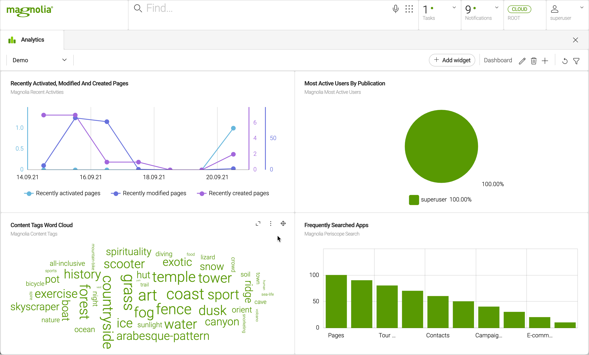
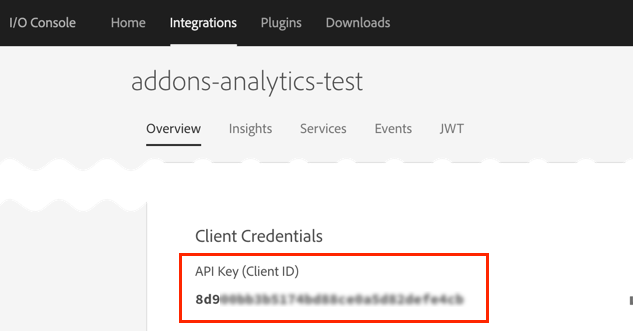

Analytics module
| Connector Pack | Analytics Connector Pack |
|---|---|
License |
|
Issues |
|
Maven site |
|
Latest |
1.2.2 |
The Analytics Connector Pack modules provide a framework and connectors to inject your analytics data into the Magnolia UI enabling authors and marketeers to make data-driven decisions.
The overall process to configure a dashboard is:
-
Connect to a data supplier, such as Adobe Analytics, Google Analytics, Matomo, a file or another third party analytics data provider.
-
Configure the data available to your end users in the Analytics app.
-
Use the Analytics app to build a dashboard and add charts as Widgets.
-
If required, tweak your dashboard and charts using the generated YAML files.
The pack delivers out-of-the-box connectors, the Analytics app and extensive predefined samples to help you build your own charts and dashboards. We recommend you or your end users build dashboards and charts using the app, but you can also manually create or alter them in the YAML configuration files.
Module structure
| artifactID | Description |
|---|---|
|
Parent reactor. |
{i1} |
Provides a default implementation to connect to amCharts, which provides JavaScript-based interactive charts and maps programming libraries and tools. |
{i1} |
Provides a default implementation to connect to Google Analytics. |
{i1} |
Provides a default implementation to connect to Matomo. |
{i1} |
Provides a default implementation to connect to Adobe Analytics. |
{i1} |
Provides the foundation and the API for the Analytics add-on. |
{i1} |
Provides the Analytics app, the |
{i1} |
Provides sample dashboards. If you do not want to have the sample dashboards available, remove this submodule. |
Installing with Maven
Maven is the easiest way to install the module. Add the following to your bundle:
<dependency>
<groupId>info.magnolia.analytics</groupId>
<artifactId>magnolia-analytics</artifactId>
<version>1.2.2</version>
</dependency><dependency>
<groupId>info.magnolia.analytics</groupId>
<artifactId>magnolia-analytics-ui</artifactId>
<version>1.2.2</version>
</dependency><dependency>
<groupId>info.magnolia.analytics</groupId>
<artifactId>magnolia-analytics-amcharts</artifactId>
<version>1.2.2</version>
</dependency><dependency>
<groupId>info.magnolia.analytics</groupId>
<artifactId>magnolia-analytics-google-connector</artifactId>
<version>1.2.2</version>
</dependency><dependency>
<groupId>info.magnolia.analytics</groupId>
<artifactId>magnolia-analytics-matomo-connector</artifactId>
<version>1.2.2</version>
</dependency><dependency>
<groupId>info.magnolia.analytics</groupId>
<artifactId>magnolia-analytics-adobe-connector</artifactId>
<version>1.2.2</version>
</dependency><dependency>
<groupId>info.magnolia.analytics</groupId>
<artifactId>magnolia-analytics-amcharts-samples</artifactId>
<version>1.2.2</version>
</dependency>Configuration
The magnolia-analytics-ui submodule provides the
Analytics
app configuration, the demo dashboard you see in the app and several
preconfigured charts.
Marketers or editors can use the Analytics app to create dashboards and charts using the UI. When they do so, YAML configuration files are created and can be edited to change or refine the dashboards and charts.
The magnolia-analytics-amcharts-samples module provides additional sample dashboards.

You can edit the configuration of the app and dashboards as part of a light module (YAML).
magnolia.resources.dir/
analytics-ui/
apps/
analytics.yaml
dashboards
demo.yaml
i18n/
magnolia-analytics-ui-messages_en.properties
Connecting to a data supplier
Define the data supplier(s) for the charts to be displayed in the Analytics app dashboard. Marketers or editors can select the data suppliers you configure when they create dashboards and widgets in the Analytics app.
You later refer to the data supplier in the chart definition dataSupplier property.
Data suppliers are defined under:
/<module name>/dataSuppliers/<dataSupplierRegistryFile.yaml>
External data suppliers
You must have an appropriate account and credentials to connect to Adobe Analytics.
class: info.magnolia.analytics.adobe.datasource.AdobeDataSupplier
credentials:
parameters:
serviceUrl: https://analytics.adobe.io/api/exchan213/reports
clientId: <your-client-id>
clientSecret: <client_secret_or_path_to_password_manager>
companyId: exchan213
orgId: 6AE67B675E217A090A495EE1@AdobeOrg
technicalAccountId: 1501153F5E44CB8F0A495E4C@techacct.adobe.com
imsHost: https://ims-na1.adobelogin.com
imsExchange: https://ims-na1.adobelogin.com/ims/exchange/jwt
# generate private key file : openssl req -nodes -text -x509 -newkey rsa:2048 -keyout secret.pem -out certificate.pem -days 356
# Upload the certificate.pem in Adobe IO Console-> Your Integration-> Public keys
# convert private key to DER format : openssl pkcs8 -topk8 -inform PEM -outform DER -in secret.pem -nocrypt > secret.key
# private key file should be in DER encoded format now, and config the path like below
privateKeyPath: /adobe-analytics/analytics/adobe/secret.key
metascopes: ent_analytics_bulk_ingest_sdk
tokenExpTime: 3600
parameters:
rsid: emagmgnl
gFilterType: dateRange
startDate: '2020-01-01'
endDate: '2020-01-15'
metricId: metrics/revenue
dimension: variables/daterangedayAccessing Adobe Client Credentials
Many of the values for the credential parameters can be found as follows:
-
Log into the Adobe I/O console.
-
Create a new Integration with Adobe Analytics.
The Client Credentials are listed in the Overview tab of the new Integration.
For example, here you can see the Client ID:

Properties
| Property | Description |
|---|---|
{i1} |
required AdobeDataSupplier |
{i1} |
required |
{i3} |
required |
{i4} |
required The URL for your Adobe Analytics service, which includes your
For example: |
{i4} |
required Your client ID. To find your client ID, see Accessing Adobe Client Credentials above. |
{i4} |
required Client secret for your Adobe Analytics account or the path to the Magnolia Passwords app. To find your client secret, see Accessing Adobe Client Credentials above. |
{i4} |
required Your Company ID issued by Adobe when you register. You can also use the Adobe swagger API to retrieve it (login required): https://adobedocs.github.io/analytics-2.0-apis/ |
{i4} |
required Your Organization ID. To find your Organization ID, see Accessing Adobe Client Credentials above. |
{i4} |
required Your Technical Account ID. To find your Technical Account ID, see Accessing Adobe Client Credentials above. |
{i4} |
required An Adobe IMS server URL, currently it is: https://ims-na1.adobelogin.com |
{i4} |
required An Adobe IMS server URL, currently it is: https://ims-na1.adobelogin.com/ims/exchange/jwt |
{i4} |
required Path to the private key file, usually a relative path from resources folder. To use the private key file:
|
{i4} |
required For Adobe Analytics, it is For more information, see the Adobe JSON Web Token (JWT) metascopes documentation. |
{i4} |
required, default is Time in seconds after which the JSON Web Token expires. When the token expires, the system automatically generates a new one so that the services are not blocked. |
{i1} |
required The parameters used in the REST call to configure the JSON results retrieved. These parameters vary depending on the data supplier used. Each parameter is a key-value pair. All the parameters shown in the example are required:
|
You must have an appropriate account and credentials to connect to GA.
The class info.magnolia.analytics.google.datasource.GoogleDataSupplierWithDateFormatter provided in Analytics module 1.1 for date formatting has been deprecated in favor of info.magnolia.analytics.google.datasource.GoogleDataSupplier.
|
class: info.magnolia.analytics.google.datasource.GoogleDataSupplier
credentials:
applicationName: Magnolia Analytics
serviceAccountJsonPath: /google-analytics/analytics/google/private_key.json
parameters:
viewId: 191451330
startDate: 7DaysAgo
endDate: today
dimensionName: ga:date
metricExpression: ga:sessionsProperties
| Property | Description |
|---|---|
{i1} |
|
{i1} |
required |
{i2} |
required Name of the application requesting the data from the Google Analytics reporting service. For example: Magnolia Analytics |
{i2} |
required Path to JSON file with service account credentials for your Google Analytics Service Account. For example:
|
{i1} |
required The parameters used in the REST call to configure the JSON results retrieved. These parameters vary depending on the data supplier used. Each parameter is a key-value pair. For Google Analytics, at least the
See the Google Analytics API documentation (https://developers.google.com/analytics/devguides/reporting/core/dimsmets) to find valid parameters for Google Analytics. |
{i1} |
optional Use to configure segment filtering. |
{i2} |
optional Expression to filter a segment. For example: |
You must have an appropriate account and credentials to connect to Matomo.
You must use the info.magnolia.analytics.matomo.datasource.MatomoDataSupplierWithTransformer class in Analytics module 1.2 (instead of the Analytics module 1.1 info.magnolia.analytics.matomo.datasource.MatomoDataSupplier class) to automatically transform data into readable data of amCharts.
|
class: info.magnolia.analytics.matomo.datasource.MatomoDataSupplierWithTransformer
credentials:
parameters:
serverUrl: https://demo.matomo.org
tokenAuth: anonymous
parameters:
method: API.get
module: API
idSite: 1
date: last7
period: day
format: json
defaultAPIMethodForTotalReport: API.getProperties
| Property | Description |
|---|---|
{i1} |
required |
{i1} |
required |
{i2} |
required |
{i3} |
required The URL to your Matomo server. |
{i3} |
required |
{i1} |
required The parameters used in the REST call to configure the JSON results retrieved. These parameters vary depending on the data supplier used. Each parameter is a key-value pair. For Matomo, at least the See the Matomo API documentation (https://developer.matomo.org/api-reference/reporting-api#API) to find valid parameters for Matomo. For example, the Matomo example above retrieves JSON format data using the Matomo API.get. |
{i1} |
optional Use to configure segment filtering. |
{i2} |
optional Expression to filter a segment. For example: |
{i1} |
required Use to configure the API to get a total report. Specific to the Metric number chart. API suggestion: API.get |
If you want to integrate your own external analytics tool, implement the class AbstractExternalDataSupplier, which provides credential parameters. This class extends the AbstractDataSupplier so data filtering in the UI is also supported.
The Google Analytics data supplier extends this generic class with Google Analytics account credentials.
Internal data suppliers
The abstract data supplier (info.magnolia.analytics.datasource.AbstractDataSupplier ) enables you to filter chart data using filter fields in the Magnolia UI, for example, the filters used to select a start and end date for your data.
This supplier is suitable for internal data that need filters for display purposes.
Depending on your requirements, you can configure a file-based data supplier using the class FileBasedDataSupplierto fetch data from a JSON file.
For example:
class: info.magnolia.analytics.datasource.FileBasedDataSupplier
filePath: /analytics-ui/json/dummy.jsonIn our demo dashboard, we show an example of search data taken from the Magnolia Find Bar data using a custom data supplier with a limit on the number of results returned:
class: info.magnolia.analytics.datasource.FrequentlySearchAppDataSupplier
parameters:
limitTopSearch: 8Note that the limitTopSearch parameter can be used when defining dashboard filters instead.
The class info.magnolia.analytics.datasource.PeriscopeDataSupplier provided in Analytics module 1.1 has been deprecated in favor of info.magnolia.analytics.datasource.FrequentlySearchAppDataSupplier due to changes in the JSON data.
|
Again in our demo dashboard, we show an example of Magnolia content tags data using a custom data supplier:
class: info.magnolia.analytics.datasource.ContentTagsDataSupplierClass: ContentTagsDataSupplier
Configuring chart definitions
| From 1.2, we recommend using the Analytics app to create charts. |
Marketers and editors can create charts visually in the Analytics app. When they do so, a yaml file is generated automatically with the dashboard and chart definitions. For example:
hideMenuBarExtension: false
label: example dashboard
layoutId: "50-50"
chartDefinitions: !override
- seriesGeneratorClass: info.magnolia.analytics.amcharts.data.DynamicSeriesGenerator
name: Example chart
label: Example chart
styleName: "dashboard-flex-item-50"
class: info.magnolia.analytics.amcharts.data.AmChartDefinition
transformerClass: info.magnolia.analytics.amcharts.data.JsonDataTransformer
dataSupplier: dummyDataSupplier
chartType:
type: PieChart
name: chartType
class: info.magnolia.analytics.amcharts.data.configuration.AmChartType
legend:
position: bottom
series: !override
- type: PieSeries
name: series
class: info.magnolia.analytics.amcharts.data.configuration.Series
dataFields: !override
- name: category
jsonPath: "$.[*].city_name"
class: info.magnolia.analytics.amcharts.data.configuration.DataField
value: label
- name: value
jsonPath: "$.[*].nb_visits"
class: info.magnolia.analytics.amcharts.data.configuration.DataField
value: "nb_visits"You can fine-tune the charts under chartDefinitions (from line 4 in
the example above) or create your own.
You can also change the dashboard layout and hide dashboards from the Analytics app dropdown.
Magnolia provides integration with amCharts (AmChartDefinition) but you can also write your own simple charts (SimpleChartDefinition).
Magnolia also provides DynamicSeriesGenerator to dynamically display values from multiple series.
Predefined amCharts chart types
|
The predefined amCharts chart types provided in Analytics module 1.1 are not compatible with 1.2. In Analytics module 1.2, you must use predefined chart definitions instead. We recommend you use the 1.2 Analytics app to re-create your 1.1 dashboards and widgets from scratch. However, we provide an example of how to migrate in How to migrate Analytics module 1.1 dashboards to 1.2 if you prefer to reconfigure your charts and dashboards. |
The magnolia-analytics-ui submodule provides several predefined
amCharts charts under /analytics-ui/chartTypes:
-
simple-line.yaml
-
trend-lines.yaml
-
line-different-colors-ups-downs.yaml
-
simple-bar.yaml
-
floating-bar.yaml
-
3d-bar.yaml
-
simple-column.yaml
-
triangle-column.yaml
-
3d-column.yaml
-
pie.yaml
-
3d-pie.yaml
-
donut-with-radial-gradient.yaml
-
3d-donut.yaml
-
candlestick.yaml
-
xy-chart-fills-axis.yaml
-
ohlc.yaml
-
timeline.yaml
| You can see details of the amCharts chart types in their documentation. |
You can reuse the predefined chart types when defining your chart
definition using
YAML
includes and decorating the series provided.
Predefined chart definitions
The magnolia-analytics-ui submodule provides several predefined chart definitions under /analytics-ui/charts.
-
simple-line.yaml
-
trend-lines.yaml
-
simple-bar.yaml
-
floating-bar.yaml
-
3d-bar.yaml
-
simple-column.yaml
-
triangle-column.yaml
-
3d-column.yaml
-
pie.yaml
-
3d-pie.yaml
-
donut-with-radial-gradient.yaml
-
3d-donut.yaml
-
candlestick.yaml
-
xy-chart-fills-axis.yaml
-
ohlc.yaml
-
metric-number.yaml
-
word-cloud.yaml
The analytics-amcharts-samples submodule provides several predefined chart definitions under /analytics-amcharts-samples/charts.
-
timeline.yaml
-
pictorial.yaml
-
pyramid.yaml
-
funnel.yaml
Simple chart definition
This example shows the configuration for a simple chart that displays an icon plus the number of unique visitors to a page used to display results in the Magnolia A/B/n Testing app.

dataSupplier: dummyABTestDataSupplier
label: dashboard.chart.simpleLabel
class: info.magnolia.analytics.common.SimpleChartDefinition
icon: icon-datepicker
propertyOrJsonPath: $.uniqueVisitorsAdobe Analytics simple column chart definition example
chartDefinitions:
chart-1: !include:/analytics-ui/charts/column-and-bar/simple-column.yaml
dataSupplier: adobeDataSupplier
chartType:
# Decorate series for mapping json data
series:
- name: series
dataFields:
- name: categoryX
jsonPath: $.rows[*].value
- name: valueY
jsonPath: $.rows[*].data[0]Google Analytics simple column chart definition example
chartDefinitions:
line2GA: !include:/analytics-ui/charts/column-and-bar/simple-column.yaml
label: Session by date from GA
chartType:
# This is example how to decorate chart type to decorate data field mapping
series:
- name: series
dataFields:
- name: categoryX
jsonPath: $.reports[*].data.rows[*].dimensions[*] # Decorate jsonPath for categoryX to map data from GA
- name: valueY
jsonPath: $.reports[*].data.rows[*].metrics[*].values[*] # Decorate jsonPath for valueY to map data from GA
dataSupplier: googleSupplierMatomo pie chart definition example
chartDefinitions:
column2Matomo: !include:/analytics-ui/charts/pie-and-donut-group/pie.yaml
label: User country from Matomo
chartType:
responsive:
enabled: true
dataSupplier: demoMatomoSupplierIn this example, the predefined pie.yaml chart does not show a decorated series because Matomo can reuse the default series directly.
Custom AmChartType configuration
If you do not want to use a predefined chart type supplied by Magnolia, you can configure your own. There are two ways of doing so:
-
Select the amCharts type you require and provide the native JSON-based config by amCharts.
For example:
analytics-amcharts-samples/dashboards/treemap-sankey-gauge-chord.yamlchartDefinitions: treemap: class: info.magnolia.analytics.amcharts.data.AmChartDefinition dataSupplier: dummyForceDirectedTreeDataSupplier nativeJsonConfig: /info/magnolia/analytics/samples/json/treemap-sunburst-sankey-chord/dummy-treemap-sunburst-config.json type: TreeMap -
Write your own chart type YAML configuration.
For example:
analytics-ui/charts/pie-and-donut-group/pie.yamlclass: info.magnolia.analytics.amcharts.data.AmChartDefinition dataSupplier: dummyDataSupplier label: dashboard.chart.pie chartTypeConfigurationName: pie chartType: class: info.magnolia.analytics.amcharts.data.configuration.AmChartType type: PieChart series: - name: series type: PieSeries dataFields: - name: category value: label jsonPath: $.[*].city_name - name: value value: nb_visits jsonPath: $.[*].nb_visits legend: position: bottomAnd include it in your chart definition:
chart2: !include:/analytics-ui/charts/pie-and-donut-group/pie.yaml dataSupplier: mostActiveUsersOnPageDataSupplier label: dashboard.chart.chart2 chartType: # This is an example of how to decorate a chart type to decorate data field mapping series: - name: series dataFields: - name: category jsonPath: $.[*].user # Decorate jsonPath for categoryX to map data from GA - name: value jsonPath: $.[*].['number of activations'] ticks: disabled: true labels: disabled: true
Example of JSON config translated to YAML
Pie chart JSON config
<script src="//www.amcharts.com/lib/4/core.js"></script>
<script src="//www.amcharts.com/lib/4/charts.js"></script>
<div id="chartdiv" style="width: 900px; height 800px;"></div>
<script>
// Create chart instance in one go
var chart = am4core.createFromConfig({
// Create pie series
"series": [{
"type": "PieSeries",
"dataFields": {
"value": "litres",
"category": "country"
}
}],
// Add data
"data": [{
"country": "Lithuania",
"litres": 501.9
}, {
"country": "Czech Republic",
"litres": 301.9
}, {
"country": "Ireland",
"litres": 201.1
}, {
"country": "Germany",
"litres": 165.8
}, {
"country": "Australia",
"litres": 139.9
}, {
"country": "Austria",
"litres": 128.3
}, {
"country": "UK",
"litres": 99
}, {
"country": "Belgium",
"litres": 60
}, {
"country": "The Netherlands",
"litres": 50
}],
// And, for good measure, let's add a legend
"legend": {}
}, "chartdiv", am4charts.PieChart);
</script>Properties
| Property | Description | ||
|---|---|---|---|
|
required |
||
{i1} |
required A name for the given chart displayed in the dashboard. For example If you are using a predefined chart definition Use a Magnolia-specific directive YAML include to reuse the Predefined amCharts chart types delivered by the analytics-ui module. For example: chart1: !include:/analytics-ui/charts/pie-and-donut-group/pie.yaml You then override the chart type series to adjust the data to your requirements. |
||
{i2} |
required The source of the data displayed in the charts. For example, |
||
{i2} |
required A text label displayed as the title of the chart in the dashboard. For
example |
||
{i2} |
required amChart definition class: AmChartDefinition Simple chart definition class: SimpleChartDefinition |
||
{i2} |
required (only available for simple chart definitions) A Magnolia font icon such as |
||
{i2} |
required (only available for simple chart definitions) Defines the values displayed in the simple chart. Because all data suppliers must return JSON, you can specify a property in that JSON or use a JSONPath expression to point to the value you want to display. For example, to get the number of unique visitors from the JSON file:
|
||
{i2} |
required if you are using predefined chart definitions and overriding chart type series to adjust the data to your requirements For example: chartType:
# This is example how to decorate chart type to decorate data field mapping
series:
- name: series
dataFields:
- name: categoryX
jsonPath: $.reports[*].data.rows[*].dimensions[*] # Decorate jsonPath for categoryX to map data from GA
- name: valueY
jsonPath: $.reports[*].data.rows[*].metrics[*].values[*] # Decorate jsonPath for valueY to map data from GA
|
||
{i3} |
required Chart type class: AmChartType |
||
required Each chart type can support only relevant amCharts series. When using a predefined chart type, the correct series is included. You must override the series to adjust the data to your requirements.
Series have two main purposes:
Many amCharts series settings are available. |
|||
{i4} |
required Defines the connection between data item and actual properties in raw data. The |
||
{i5} |
required The name of the data field. |
||
{i5} |
required The value of the data field. |
||
{i5} |
optional The JSONPath expression filters the data you retrieve about your site from the data supplier. The syntax you use depends on your data and what you want to display in your chart.
Example: jsonPath: $.reports[*].data.rows[*].dimensions[*] |
||
{i3} |
required for most chart types Defines the X axis data and appearance. For example, in the predefined simple-bar.yaml chart type: xAxes:
- name: xaxe
type: VALUE_AXIS
See the amCharts documentation about Axes. |
||
{i3} |
required for most chart types Defines the Y axis data and appearance. For example, in the predefined simple-bar.yaml chart type: yAxes:
- name: yaxe
type: CATEGORY_AXIS
renderer:
minGridDistance: 10
grid:
location: 0
dataFields:
category: city_name
|
||
{i2} |
required If you are not using a predefined chart definition Path to the native JSON-based config custom configuration you created. For example: |
||
{i2} |
required If you are not using a predefined chart definition The chart type for the native JSON-based config custom configuration you created. For example: |
Dynamic chart type configuration
If you need to dynamically display values from multiple series, you must use the following properties in your chartType:
| Property | Description |
|---|---|
|
required |
|
required The root of the variants in your JSON data. |
|
required Configure like the We currently support two types of dynamic series: LineSeries and ColumnSeries. |
|
required Specify the data value to be displayed. The For example: chartDefinitions:
dynamic-lines:
class: info.magnolia.analytics.amcharts.data.AmChartDefinition
label: dashboard.chart.dynamic-lines
dataSupplier: dummyABTestDataSupplier
chartType:
class: info.magnolia.analytics.amcharts.data.configuration.DynamicSeriesAmChartType
type: XYChart
prefixRootJsonPath: $..variantsDailyResults
seriesTemplate:
type: LineSeries
dataFields:
- name: valueY
value: value
jsonPath: ..conversionRates..conversionRate
- name: dateX
value: date
jsonPath: ..conversionRates..date
tooltipText: '"{dateX}\n[bold font-size: 17px]value: {valueY}[/]"'
strokeWidth: 3
xAxes:
- name: xaxe
type: DATE_AXIS
renderer:
minGridDistance: 10
grid:
location: 0
yAxes:
- name: yaxe
type: VALUE_AXIS
cursor:
type: XYCursor
|
Configuring dashboard definitions
| From 1.2, we recommend using the Analytics app to change the dashboard layout. |
Editors and marketers can use the Analytics app to change the dashboard
layout. By default, the dashboard is set to two equal-sized columns
(layoutId: "50-50"). Charts are positioned automatically on a first
come, first served basis in the columns from left to right on as many
rows as are necessary for the number of charts you add.
When a dashboard is created or edited, layoutId and styleName
properties are added to the dashboard definition. You can edit them
manually if required.
For example: /analytics-ui/dashboards/test.yaml.
hideMenuBarExtension: false
label: dashboard-test
layoutId: "50-50"
chartDefinitions: !override
- seriesGeneratorClass: info.magnolia.analytics.amcharts.data.DynamicSeriesGenerator
name: test chart
label: test chart
styleName: "dashboard-flex-item-50"
class: info.magnolia.analytics.amcharts.data.AmChartDefinition
transformerClass: info.magnolia.analytics.amcharts.data.JsonDataTransformer
dataSupplier: dummyDataSupplier
chartType:| Property | Description |
|---|---|
{i1} |
required, default is `"50-50"` Defines the layout of your dashboard. For example, with a
Values possible:
|
{i2} |
required, default is `"dashboard-flex-item-50"` Defines the style of the chart corresponding to the layout. Values possible:
|
Configuring the cache
You can configure the cache in the JCR or the File System (YAML) under: /analytics/decorations/addon-commons-cache/config.yaml
By default, the cache is enabled and content pulled from your external solution is updated every 30 minutes.
cacheConfigurations:
analytics:
caches:
analytics-datasupplier: expireAfterAccess=30m
analytics-datasupplier-metrics: expireAfterAccess=30m
enabled: trueSet the enabled property to false to disable caching.
When you click the refresh button on the dashboard, the cache is invalidated.
Refreshing the dimension and metric metadata cache
Magnolia gets the dimensions and metrics displayed to users from live third-party metadata.
In general, third-party data suppliers, such as Adobe Analytics, Google Analytics or Matomo, do not change their metadata very frequently. Magnolia therefore stores the metadata for each supplier in a resource file and reads from the file each time a user wants to see all the metrics and dimensions for the data supplier they select.
By default, Magnolia provides a command and a scheduled job to update the metadata on the first day of every month. You can change the scheduled job configuration if required.
| Data supplier | Unique metadata file | Job and command |
|---|---|---|
Adobe Analytics |
The metadata file is named using the companyId and rsid from the Adobe Analytics data supplier configuration separated with underscores. Example: |
|
Google Analytics |
|
|
Matomo |
The metadata file is named using the serverURL and idSite parameters from the Matomo data supplier configuration separated with hyphens. Example: |
|
Customizing the Analytics app for your end users
You can configure what data is available and how it appears for the end users creating and using dashboards and widgets in the Analytics app:
Defining dashboard filters
Developers can define filters to drill down into the data displayed in the charts that are configured. When set, each filter is applied to all the charts in the dashboard simultaneously. For example, if you set a filter to display a given time range, all the charts display data for that time range.
You can use basic Magnolia field types to define filters, such as date, rich text, and so on.
Complex fields such as multiValue, composite, switchable and collapsibleComposite are not supported.
The filter parameters depend on the type of data supplier used (see properties below).
Example
filterFields:
- name: limitTopSearch
$type: textField
placeholder: number
label: Limit of frequent search
- name: numberOfTags
$type: textField
placeholder: number
label: Number of content tags
- name: startDate
$type: dateField
label: Start date
- name: endDate
$type: dateField
label: End dateProperties
| Property | Description |
|---|---|
|
required |
{i2} |
required The filter names are used to append the REST call against the supplier. Therefore, the value here must have a counterpart in the given data suppliers. You can also use filters to override parameters. Filter parameters for each supplier:
|
{i2} |
|
{i2} |
required A text label displayed as the title of the filter in the dashboard. For
example |
{i2} |
optional Text to be displayed in the filter field when you do not want the filter to appear empty. |
{i2} |
optional Options to be applied to the filter contents. The sub-properties depend on the field type being used. |
Using date filters
If you do not set a value for the date parameter in the data supplier yaml file (such as /matomo/dataSuppliers/demoMatomoSupplier.yaml), the dashboard display uses the default value (for Matomo: last7).
In the dashboard, if the filter startDate and endDate are left empty by the user, the date parameter value from the data supplier yaml file is used in widgets for that data supplier.
If the user enters a startDate and endDate in the filter, the date value range selected is used in widgets for that data supplier.
If the user only enters a startDate, data for that date only is displayed in widgets for that data supplier.
If the user only enters an endDate, data for that date only is displayed in widgets for that data supplier.
Enabling and disabling dashboard definitions
By default, all the dashboards you or your end users create are available in the Analytics app.
If you do not want a dashboard to be available in the app, you must set
the enabled property in the dashboard definition to false.
In this example, the demo dashboard is enabled:
enabled: true
chartDefinitions:
chart1:
dataSupplier: recentPageActivitiesDataSupplier
class: info.magnolia.analytics.amcharts.data.AmChartDefinition
chartType:
class: info.magnolia.analytics.amcharts.data.configuration.AmChartType
series:
- name: Recently activated pages
type: LineSeries
yAxis: yaxeWhen there are no user-defined dashboards available in the app, the fallback display by default is the demo dashboard provided by Magnolia.
If you disable the default demo dashboard, nothing is displayed in the app when no user-defined dashboards are available.
Configuring the dashboard displayed by default
By default, the demo dashboard is the dashboard selected in the dropdown and displayed when you open the Analytics app.
If you want to change the default dashboard displayed, add the dashboardName property to /analytics-ui/apps/analytics.yaml and set its value to the name of the dashboard you want.
subApps:
dashboard:
class: info.magnolia.analytics.ui.app.DashboardSubAppDescriptor
dashboardName: timeline # this is the real name of dashboard and its `enabled` property must be `true`
The dashboard definition name you set must exist under /analytics-ui/dashboards and be enabled.
|
Configuring the list of data suppliers available
You can configure which data suppliers are available to your end users in the Analytics app Add widget and Edit widget dialogs.
To do so, edit the configuration for the ignoredDataSupplierNamesStartingWith property under analytics-ui/config.yaml.
For example, by default, Magnolia removes the A/B/n Testing data supplier from the dropdown:
ignoredDataSupplierNamesStartingWith:
- testResultsDataSupplier #ignore supplier in ab testingIf you want to remove all data suppliers starting with the word "dummy", the configuration is:
ignoredDataSupplierNamesStartingWith:
- testResultsDataSupplier #ignore supplier in ab testing
- dummy # ignore all supplier name starting with "dummy"Configuring the list of chart types available
You can configure which chart types are available to your end users in the Analytics app Add widget and Edit widget dialogs when adding advanced widgets.
To do so, edit the configuration for the chartTypeConfigurationName property in the:
-
Add widget dialog:
analytics-ui/dialogs/widgetStep.yaml -
Edit widget dialog:
analytics-ui/dialogs/widgetStepForEdit.yaml
By default, Magnolia lists the Timeline (simple-line), Metric number (metric-number), Bar (simple-column) and Pie (pie) chart types in the dropdown:
chartTypeConfigurationName:
$type: comboBoxField
required: true
placeholder: analytics-ui.widgetStep.chartTypeConfigurationName.placeholder
factoryClass: info.magnolia.analytics.ui.app.fields.ChartTypeConfigurationNameComboBoxFieldFactory
datasource:
$type: optionListDatasource
options:
- name: simple-column
value: simple-column
- name: pie
value: pie
- name: metric-number
value: metric-number
- name: simple-line
value: simple-lineAdding a chart type to the dropdown
You can reuse one of the predefined chart definitions in the chart type dropdown, except those which have more than two data fields (such as the candlestick or ohlc chart types).
For example, to make the predefined word-cloud chart type available to your users when they add or edit all widgets, add it to the options as shown below.
chartTypeConfigurationName:
$type: comboBoxField
required: true
placeholder: analytics-ui.widgetStep.chartTypeConfigurationName.placeholder
factoryClass: info.magnolia.analytics.ui.app.fields.ChartTypeConfigurationNameComboBoxFieldFactory
datasource:
$type: optionListDatasource
options:
- name: simple-column
value: simple-column
- name: metric-number
value: metric-number
- name: pie
value: pie
- name: simple-line
value: simple-line
- name: word-cloud
value: word-cloudWe recommend you provide an i18n key for the chart types you add to analytics-ui/i18n/magnolia-analytics-ui-messages_en.properties. You can find the key by opening the dialog and looking in the dropdown:
If you want to update an existing chart created in v1.1 with a new chart type, use a YAML include to add it to the chart definition.
For example:
chart4:
dataSupplier: contentTagsDataSupplier
class: info.magnolia.analytics.amcharts.data.AmChartDefinition
chartType:
class: info.magnolia.analytics.amcharts.data.configuration.AmChartType
series:
- name: series
type: WordCloudSeries
labels:
fill: "#599900"
dataFields:
- name: word
value: tag
jsonPath: $.[*].tag
- name: value
value: weight
jsonPath: $.[*].weight
type: WordCloudchart4: !include:/analytics-ui/charts/word-cloud.yaml
dataSupplier: contentTagsDataSupplier
chartType:
# Decorate series for mapping json data
series:
- name: series
dataFields:
- name: word
value: tag
jsonPath: $.[*].tag
- name: value
value: weight
jsonPath: $.[*].weightChanging the theme and CSS
You can change the CSS and theme of the dashboard charts to suit your visual requirements.
To do so, update the amcharts.css and amcharts_theme.js files in
/info/magnolia/analytics/amcharts/vaadin.
Enabling responsiveness
Magnolia supports the amCharts responsiveness feature.
+
To make your charts responsive, enable the feature by adding the responsive property to the chart definition and setting it to enabled: true as shown in this example:
chartDefinitions:
column2Matomo: !include:/analytics-ui/charts/pie-and-donut-group/pie.yaml
label: User country from Matomo
chartType:
responsive:
enabled: true
dataSupplier: demoMatomoSupplierIf you enable responsiveness, when a charts pixelWidth is ⇐ 500px, Magnolia automatically hides the chart legend.
You can change the responsive rules in
/info/magnolia/analytics/amcharts/vaadin/amcharts_connector.js.
Configuring default metrics and dimensions
The following default metrics and dimensions are used for each third-party data supplier. You can change the defaults through decoration in the data supplier yaml file.
Adobe Analytics
| Metric | ID |
|---|---|
Visits |
metrics/visits |
Unique Visitors |
metrics/visitors |
Page Views |
metrics/pageviews |
Time Spent per Visit |
metrics/timespentvisit |
Bounce Rate |
metrics/bouncerate |
| Dimension | ID |
|---|---|
Date |
variables/daterangeday |
Google Analytics
| Label | ID |
|---|---|
Users |
ga:users |
Sessions |
ga:sessions |
Pages / Session |
ga:pageviewsPerSession |
Avg. Session Duration |
ga:avgSessionDuration |
Bounce Rate |
ga:bounceRate |
| Dimension | ID |
|---|---|
Date |
ga:date |
Matomo
| Label | ID |
|---|---|
Unique Visitors |
nb_uniq_visitors |
Visits |
nb_visits |
Actions |
nb_actions |
Total time spent |
sum_visit_length |
Bounce Rate |
bounce_rate |
| Dimension | ID |
|---|---|
Date |
API.get |
Example: Decorating default metrics and dimensions
In this example, the Adobe Analytics data supplier is decorated to change the default dimension and metrics.
The default time granularity dimension has been changed from days (daterangeday) to weeks (daterangeweek). The default metrics are now revenue and time spent per visit.
With this decoration, all commonly used metrics charts created by end users in the app will be based on these new defaults.
/adobe-analytics/dataSuppliers/adobeDataSupplier.yaml
defaultCommonDimension: variables/daterangeweek
defaultCommonMetrics:
'metrics/revenue': "Revenue"
'metrics/timespentvisit': "Time spent per visit"| The metric ID is the value on the left. The value on the right is the i18n key displayed to users in the app. If no i18n key is set, the metric ID is displayed. |
Configuring metric data start dates
You can configure the start date for the metric data for each data supplier in /<module name>/dataSuppliers/<dataSupplierRegistryFile.yaml>.
This controls what data end users see in the widgets they add in Analytics app.
Defaults:
-
Adobe:
-
endDate: '2020-01-15' -
startDate: '2020-01-01'
-
-
Matomo:
last7 -
Google Analytics:
7DaysAgo
Configuring date formatting in widgets
You can configure how dates are displayed in widgets either for each data supplier or for all the widgets, regardless of where the data comes from.
To configure date formatting for a specific data supplier, add the properties below to: /<module name>/dataSuppliers/<dataSupplierRegistryFile>.yaml
For example, for Adobe, /adobe-analytics/dataSuppliers/adobeDataSupplier.yaml:
fromdateFormat: MMM d, yyyy
toDateFormat: dd.MM.yy
decimalNumberFormat: "#0.00"To configure date formatting for all widgets, add the properties below to: /analytics/config.yaml. For example:
dateFormat: dd.MM.yy
decimalNumberFormat: "#0.00"| Property | Description |
|---|---|
|
Date format in the JSON results retrieved. Default values:
|
|
Date format you want to use in the charts defined for each data supplier. If defined for a given data supplier, this property overrides the |
|
Defines the date format for all suppliers. Default value: If the If both the properties are configured, the value of |
Configuring decimal formatting in widgets
Like date formatting, you can configure how decimals are displayed in widgets either for each data supplier or for all the widgets, regardless of where the data comes from.
To configure decimal number formatting for a specific data supplier, add the decimalNumberFormat property to: /<module name>/dataSuppliers/<dataSupplierRegistryFile>.yaml
For example, for Adobe, `/adobe-analytics/dataSuppliers/adobeDataSupplier.yaml:
fromdateFormat: MMM d, yyyy
toDateFormat: dd.MM.yy
decimalNumberFormat: "#0.0000"To configure decimal number formatting for all widgets, add the decimalNumberFormat property to: /analytics/config.yaml. For example:
dateFormat: dd.MM.yy
decimalNumberFormat: "#0.00"| Property | Description |
|---|---|
|
Decimal number formatting displayed in widgets. The default value
If the |
Converting time metrics to seconds for Matomo widgets
This configuration only applies to data suppliers configured with the info.magnolia.analytics.matomo.datasource.MatomoDataSupplierWithTransformer class.
In some cases, Matomo returns time metrics as, for example, 2 days 12:34:56.789. This means 2 days, 12 hours, 34 minutes, and 56.789 seconds. To be correctly displayed and compared on a chart, a value such as 00:01:30.00 should be converted to seconds only: 90.
You can configure time metrics so they display as seconds using the property metricsForTimeToSecondsConversion property in matomo/config.yaml.
The default configuration is:
metricsForTimeToSecondsConversion:
- avg_time_on_site_new
- avg_time_on_site_returning
- sum_total_time_watche
- avg_time_on_site
- avg_page_load_time
- avg_form_time_hesitation
- avg_form_time_spent
- avg_form_time_to_first_submission
- avg_form_time_to_conversion
- avg_time_network
- avg_time_server
- avg_time_transfer
- avg_time_dom_processing
- avg_time_dom_completion
- avg_time_on_load
- avg_time_watched
- avg_time_to_playAdd metrics to this list as required for your data.
Displaying analytics in an IUX slot
In addition to viewing analytics charts in the Analytics app, you can display them next to the content they apply to in IUX (Integrated User eXperience) slots.
IUX slots are extension panels in the browser subapp. The panel allows you to configure a list of extension views in the workbench and replaces ContentToolDefinition of Magnolia 5 UI.
The first slot, introduced in Magnolia 6.2, is a wide horizontal slot at the top of content apps such as the Pages app.
Use decoration to configure the:
-
Extension panel in the Pages app (see
extensionViewsfor configuration and properties). -
Charts to be displayed.
-
Data suppliers providing the analytics data.
| Use the Refresh button in the Analytics app dashboard to clear the cache of the data supplier providing the data displayed in the IUX slot. |
IUX slot filter configuration examples
Filter configuration example for Adobe Analytics.
| Refer to the instructions on the How to configure Adobe Analytics data in an IUX slot with filters page first. Some configuration in your Adobe Launch interface is required to enable Adobe Analytics in Magnolia IUX slots. |
extensionViews:
- name: analytics1
icon: icon-analytics-app
view:
name: analytics
$type: analyticsView
chartDefinitions:
- name: adobePageViews
label: "Total Adobe Page Views"
class: info.magnolia.analytics.amcharts.data.AmChartDefinition
dataSupplier: adobePageViewsDataSupplier
chartType: !include:/analytics-ui/chartTypes/line-and-area/line-different-colors-ups-downs.yaml
series:
- name: series
dataFields:
- name: categoryX
jsonPath: "$.rows[*].value"
- name: valueY
jsonPath: "$.rows[*].data[0]"
xAxes: !override
- name: xaxe
renderer:
labels:
truncate: true
maxWidth: 90 #maxWidth can be change due to your config, exp: 120 instead of 90
- name: adobeMetricFilter
label: "Adobe Page Views With Metric Filters"
class: info.magnolia.analytics.amcharts.data.AmChartDefinition
dataSupplier: adobeMetricFilterDataSupplier
chartType: !include:/analytics-ui/chartTypes/line-and-area/line-different-colors-ups-downs.yaml
series:
- name: series
dataFields:
- name: categoryX
jsonPath: "$.rows[*].value"
- name: valueY
jsonPath: "$.rows[*].data[0]"
xAxes: !override
- name: xaxe
renderer:
labels:
truncate: true
maxWidth: 90
dataSuppliers:
adobePageViewsDataSupplier:
class: info.magnolia.analytics.adobe.datasource.AdobeDataSupplier
credentials:
parameters:
serviceUrl: https://analytics.adobe.io/api/xxxxxxxxxxxx/reports
clientId: xxxxxxxx
clientSecret: /AdobeAnalytics/ClientSecret
companyId: xxxxxxx
orgId: xxxxxxx@AdobeOrg
technicalAccountId: xxxxxx@techacct.adobe.com
imsHost: https://ims-na1.adobelogin.com
imsExchange: https://ims-na1.adobelogin.com/ims/exchange/jwt
privateKeyPath: /bca-common/adobe/secret.key
metascopes: ent_analytics_bulk_ingest_sdk
tokenExpTime: 3600
parameters:
rsid: xxxxxxxx
gFilterType: dateRange
metricId: metrics/pageviews
dimension: variables/evar3 #This is just an example, variables need to be configured to map with pageName or pageUrl
filteringSubSetExpression:
clause: CONTAINS '%s' #selected node path
adobeMetricFilterDataSupplier:
class: info.magnolia.analytics.adobe.datasource.AdobeDataSupplier
credentials:
parameters:
serviceUrl: https://analytics.adobe.io/api/xxxxxxxxxxxx/reports
clientId: <your-client-id>
clientSecret: <client_secret_or_path_to_password_manager>
companyId: <your-company-id>
orgId: xxxxxxx@AdobeOrg
technicalAccountId: xxxxxx@techacct.adobe.com
imsHost: https://ims-na1.adobelogin.com
imsExchange: https://ims-na1.adobelogin.com/ims/exchange/jwt
privateKeyPath: /bca-common/adobe/secret.key
metascopes: ent_analytics_bulk_ingest_sdk
tokenExpTime: 3600
parameters:
rsid: xxxxxxxx
gFilterType: dateRange
metricId: metrics/pageviews
dimension: variables/daterangeday
metricFiltersExpression:
- id: 0
type: breakdown
dimension: variables/evar1 #This is just an example, variables need to be configured to map with pageName or pageUrl
itemValue: "%s" #selected node path
- id: 1
type: dateRange
filterFields:
- name: startDate
$type: dateField
- name: endDate
$type: dateFieldSearch parameter options for report filtering
The Adobe search parameters documentation indicates that
Adobe Analytics provides the following search parameter options:
-
itemId- A single ID to include in the report. -
itemIds- A list of itemIds to include in the report. -
excludeItemIds- A list of itemIds to exclude in the report. -
clause- A search clause to use when filtering dimensions. -
includeSearchTotal- Includes a special element calledsearchTotalsin the response that contains the total of the filtered items. The default isfalse.
For example:
filteringSubSetExpression:
clause: CONTAINS '%s'filteringSubSetExpression:
itemIds: 1200002,1200003
includeSearchTotal: trueBreakdown Reports
The Adobe Analytics breakdown reports documentation indicates that breakdowns in the API are useful when you want to see the cross-product of values from two different dimensions. When requesting a breakdown report, use the metricsFilters and dimension parameters to request the additional dimension.
Breakdown reports include the following options:
-
id -
type -
dimension -
itemValue -
itemId -
segmentId -
dateRange
For example:
metricFiltersExpression:
- id: 0
type: breakdown
dimension: variables/evar1
itemValue: "%s" #selected node path
- id: 1
type: dateRangeFilter configuration example for Google Analytics.
The configuration in this decoration file (with the relevant credentials added) results in charts displayed in an IUX slot at the top of the Pages app for the Travel Demo pages.
extensionViews:
- name: analytics
icon: icon-analytics-app
view:
name: analytics
$type: analyticsView
chartDefinitions:
- name: pageViews
label: pages-app.extensionViews.analytics.pageViews.label
class: info.magnolia.analytics.amcharts.data.AmChartDefinition
dataSupplier: gaPageViewsSupplier
chartType: !include:/analytics-ui/chartTypes/line-and-area/line-different-colors-ups-downs.yaml
series:
- name: series
dataFields:
- name: categoryX
jsonPath: $.reports[*].data.rows[*].dimensions[*]
- name: valueY
jsonPath: $.reports[*].data.rows[*].metrics[*].values[*]
- name: sessions
label: pages-app.extensionViews.analytics.sessions.label
class: info.magnolia.analytics.amcharts.data.AmChartDefinition
dataSupplier: gaSessionsSupplier
chartType: !include:/analytics-ui/chartTypes/line-and-area/line-different-colors-ups-downs.yaml
series:
- name: series
dataFields:
- name: categoryX
jsonPath: $.reports[*].data.rows[*].dimensions[*]
- name: valueY
jsonPath: $.reports[*].data.rows[*].metrics[*].values[*]
- name: bounceRate
label: pages-app.extensionViews.analytics.bounceRate.label
class: info.magnolia.analytics.amcharts.data.AmChartDefinition
dataSupplier: gaBounceRateSupplier
chartType: !include:/analytics-ui/chartTypes/line-and-area/line-different-colors-ups-downs.yaml
series:
- name: series
dataFields:
- name: categoryX
jsonPath: $.reports[*].data.rows[*].dimensions[*]
- name: valueY
jsonPath: $.reports[*].data.rows[*].metrics[*].values[*]
- name: newUsers
label: pages-app.extensionViews.analytics.newUsers.label
class: info.magnolia.analytics.amcharts.data.AmChartDefinition
dataSupplier: gaNewUsers
chartType: !include:/analytics-ui/chartTypes/line-and-area/line-different-colors-ups-downs.yaml
series:
- name: series
dataFields:
- name: categoryX
jsonPath: $.reports[*].data.rows[*].dimensions[*]
- name: valueY
jsonPath: $.reports[*].data.rows[*].metrics[*].values[*]
- name: returningUsers
label: pages-app.extensionViews.analytics.returningUsers.label
class: info.magnolia.analytics.amcharts.data.AmChartDefinition
dataSupplier: gaReturningUsers
chartType: !include:/analytics-ui/chartTypes/line-and-area/line-different-colors-ups-downs.yaml
series:
- name: series
dataFields:
- name: categoryX
jsonPath: $.reports[*].data.rows[*].dimensions[*]
- name: valueY
jsonPath: $.reports[*].data.rows[*].metrics[*].values[*]
dataSuppliers:
gaPageViewsSupplier:
class: info.magnolia.analytics.google.datasource.GoogleDataSupplier
fromDateFormat: yyyyMMdd
toDateFormat: MMM-dd
credentials: &googleCredentials
applicationName: Magnolia Analytics
serviceAccountJsonPath: /analytics-view-example/credential/private_key.json
parameters:
viewId: 24199737
startDate: 7DaysAgo
endDate: today
dimensionName: ga:date
metricExpression: ga:pageviews
filteringSubSetExpression:
filtersExpression: ga:pagePath=~%s*
gaSessionsSupplier:
class: info.magnolia.analytics.google.datasource.GoogleDataSupplier
fromDateFormat: yyyyMMdd
toDateFormat: dd-MMM-yyyy
credentials: *googleCredentials
parameters:
viewId: 24199737
startDate: 7DaysAgo
endDate: today
dimensionName: ga:date
metricExpression: ga:sessions
filteringSubSetExpression:
filtersExpression: ga:pagePath=~%s*
gaBounceRateSupplier:
class: info.magnolia.analytics.google.datasource.GoogleDataSupplier
fromDateFormat: yyyyMMdd
toDateFormat: dd-MMM-yyyy
credentials: *googleCredentials
parameters:
viewId: 24199737
startDate: 7DaysAgo
endDate: today
dimensionName: ga:date
metricExpression: ga:bounceRate
filteringSubSetExpression:
filtersExpression: ga:pagePath=~%s*
gaNewUsers:
class: info.magnolia.analytics.google.datasource.GoogleDataSupplier
fromDateFormat: yyyyMMdd
toDateFormat: dd-MMM-yyyy
credentials: *googleCredentials
parameters:
viewId: 24199737
startDate: 7DaysAgo
endDate: today
dimensionName: ga:date
metricExpression: ga:newUsers
filteringSubSetExpression:
filtersExpression: ga:pagePath=~%s*
gaReturningUsers:
class: info.magnolia.analytics.google.datasource.GoogleDataSupplier
fromDateFormat: yyyyMMdd
toDateFormat: dd-MMM-yyyy
credentials: *googleCredentials
parameters:
viewId: 24199737
startDate: 7DaysAgo
endDate: today
dimensionName: ga:date
metricExpression: ga:users
filteringSubSetExpression:
filtersExpression: ga:pagePath=~%s*
filterFields:
- name: startDate
$type: dateField
type: java.util.Date
time: false
placeholder: Start
defaultValue: todayMinus7Days
- name: endDate
$type: dateField
type: java.util.Date
time: false
placeholder: End
defaultValue: today
multisite:
- path: /travel
dataSupplier:
gaPageViewsSupplier:
credentials:
serviceAccountJsonPath: /analytics-view-example/credential/private_key.json
parameters:
viewId: 110545462
gaSessionsSupplier:
credentials:
serviceAccountJsonPath: /analytics-view-example/credential/private_key.json
parameters:
viewId: 110545462
gaBounceRateSupplier:
credentials:
serviceAccountJsonPath: /analytics-view-example/credential/private_key.json
parameters:
viewId: 110545462
gaNewUsers:
credentials:
serviceAccountJsonPath: /analytics-view-example/credential/private_key.json
parameters:
viewId: 110545462
gaReturningUsers:
credentials:
serviceAccountJsonPath: /analytics-view-example/credential/private_key.json
parameters:
viewId: 110545462
Filter configuration example for Matomo.
Matomo uses segments to configure filtering Matomo Segmentation in the API.
| Not all segments work in Matomo. We recommend you check your segment is working in your Matomo dashboard first by following the instructions in the Matomo documentation before configuring your IUX slot in Magnolia. See How to build custom segments in Matomo and refer to the further reading section for some other useful links. |
extensionViews:
- name: analytics1
icon: icon-analytics-app
view:
name: analytics
$type: analyticsView
chartDefinitions:
- name: PopularMediaLast24H
label: PopularMediaLast24H
class: info.magnolia.analytics.amcharts.data.AmChartDefinition
dataSupplier: popularMediaLast24HMatomoSupplier
chartType: !include:/analytics-ui/chartTypes/line-and-area/simple-line.yaml
series:
- name: series
type: LineSeries
dataFields:
- name: categoryX
jsonPath: $..label
- name: valueY
jsonPath: $..value
xAxes: !override
- name: xaxe
renderer:
labels:
truncate: true
maxWidth: 90
dataSuppliers:
popularMediaLast24HMatomoSupplier:
class: info.magnolia.analytics.matomo.datasource.MatomoDataSupplier
credentials:
parameters:
serverUrl: https://demo.matomo.org
tokenAuth: anonymous
parameters:
module: API
method: MediaAnalytics.getCurrentMostPlays
idSite: 2
date: yesterday
period: day
format: json
filter_limit: 10
lastMinutes: 1440
filteringSubSetExpression:
segment: pageUrl=@%s
filterFields:
- name: startDate
$type: dateField
- name: endDate
$type: dateField
Further reading
-
Google Analytics
-
Google Analytics metrics explorer https://ga-dev-tools.appspot.com/dimensions-metrics-explorer/ The Dimensions & Metrics Explorer lists and describes all the dimensions and metrics available through the Core Reporting API.
-
GA Metadata API https://developers.google.com/analytics/devguides/reporting/metadata/v3/ The Metadata API returns the list and attributes of columns (i.e. dimensions and metrics) exposed in the Google Analytics reporting APIs. Attributes returned include UI name, description, segments support, and more. Example: https://www.googleapis.com/analytics/v3/metadata/ga/columns
-
Ultimate Google Analytics Dimensions and Metrics List https://www.ovrdrv.com/blog/ultimate-google-analytics-dimensions-and-metrics-list/
-
-
Matomo
-
Matomo demo https://demo.matomo.org/ Use this live Matomo demo to add charts to a dashboard. Learn what common metrics Matomo supports.
-
Matomo metrics reference https://developer.matomo.org/api-reference/reporting-api#api-response-metric-definitions
-
Matomo dimensions reference https://developer.matomo.org/api-reference/reporting-api-segmentation#list-of-segments
-
See some Matomo issues below regarding filtering by segment pageUrl: https://github.com/matomo-org/matomo/issues/11900, https://github.com/matomo-org/matomo/issues/15163, https://matomo.org/faq/how-to/how-do-i-get-matomo-segments-to-behave-as-a-filter/
-
-
Adobe Analytics
-
Adobe Experience Cloud https://experience.adobe.com/#/@magnoliaexchange/home This is the Adobe Analytics UI. It’s a little different from Google Analytics. You drag-and-drop metrics and filters (Adobe term for dimensions, but it’s really the same thing) to create reports/charts.
-
Adobe metrics reference https://docs.adobe.com/content/help/en/analytics/components/metrics/overview.html
-
Adobe dimensions reference https://docs.adobe.com/content/help/en/analytics/components/dimensions/compatibility.html
-
Adobe Swagger for querying the API https://adobedocs.github.io/analytics-2.0-apis/ Use rsid value emagmgnl
-
Adobe Analytics for GA users https://docs.adobe.com/content/help/en/analytics/technotes/ga-to-aa/home.html Documentation that helps you to learn core concepts and workflows in Adobe Analytics, focusing on key similarities and differences between Adobe and other popular tools (GA). This guide is designed for analysts who are familiar with basic digital analytics concepts, but new to Adobe Analytics.
-
Release history
Analytics module 1.2.2
Released on September 20, 2021.
This release provides improvements to dragging and dropping widgets around the dashboard and some bug fixes.
Widget drag and drop usability enhancements
To keep the UI uncluttered, widget icons are now hidden until the user mouses over the chart.
A drag and drop handle icon has been added to widgets in the Analytics app and a more obvious frame is displayed so users can better visualize where they are moving the widget.
Bug fixes
-
Since Magnolia 6.2.11, widgets with custom views did not display the correct dialog when editing the widget. (ANALYTICS-373)
-
The dashboard layout crashed after opening a chart in full screen mode and dragging and dropping a chart. (ANALYTICS-375) -
-
The Definitions app displayed a severity level of MAJOR when analytics data suppliers were missing credentials. This has now been changed to MINOR. (ANALYTICS-377)
Analytics module 1.1.2
Released on September 20, 2021.
This maintenance release provides the following bug fix:
-
The Definitions app displayed a severity level of MAJOR when analytics data suppliers were missing credentials. This has now been changed to MINOR. (ANALYTICS-377)
Analytics module 1.2.1
Released on July 9, 2021.
This release provides the following bug fixes and an improvement for using Adobe Analytics in an IUX slot:
-
Add widget action in Analytic app does not work with Magnolia 6.2.9. (ANALYTICS-361)
-
Client-secret key not resolved for Adobe supplier in Analytics IUX slot. (ANALYTICS-364)
-
Enable filtering for Adobe supplier in Analytics IUX slot. (ANALYTICS-365)
Adobe Analytics requires specific configuration in Adobe Launch and the Magnolia template to enable filters in the analytics IUX slot.
Analytics module 1.1.1
Released on July 9, 2021.
This release provides the following bug fix and improvement for using Adobe Analytics in an IUX slot:
-
Client-secret key not resolved for Adobe supplier in Analytics IUX slot. (ANALYTICS-364)
-
Enable filtering for Adobe supplier in Analytics IUX slot. (ANALYTICS-365)
Adobe Analytics requires specific configuration in Adobe Launch and the Magnolia template to enable filters in the analytics IUX slot.
Analytics module 1.2
Released on May 7, 2021.
|
The Analytics module is included in the Magnolia cloud webapp bundle. It is not bundled in the standard DX Core webapp. Note that, for the time being, Analytics module 1.1 is bundled in the |
New UI for no-code dashboards and widgets
This release delivers a new user-friendly UI to empower editors and marketeers in creating and editing their own dashboards and widgets.
In Analytics module 1.1, only technical users who were able to work with YAML files could build charts and dashboards.
Now users can create a dashboard and add widgets featuring commonly used metrics in just a few clicks. A preview of the widget being created is displayed as soon as metrics are selected. Once added to the dashboard, widgets can be dragged and dropped around, or expanded for better viewing.
See the Analytics app for how to create dashboards and add widgets.
Commonly used metrics out-of-the-box and advanced metrics
Default metrics and dimensions are provided for each third-party analytics tool so that end users can start creating popular widgets as soon as the data supplier is configured.
Users with in-depth knowledge of their analytics data can access all the metrics and dimensions available from their data supplier when adding widgets by clicking the Add metrics button.
Developers can change the default metrics and dimensions available in the Analytics app through decoration in the data supplier definitions.
Analytics data from different sources in one dashboard
A dashboard can contain widgets displaying data from different data suppliers.
You can create widgets from different sources of analytics data, such as Adobe Analytics, file-based data, Google Analytics, Matomo, and display them all in a single dashboard.
Persistent filters
Previously, dashboard filters were cleared when you changed the dashboard layout, added a widget or dragged and dropped a widget.
Now filters persist until you reload the dashboard, select another dashboard, add a dashboard or delete a dashboard.
Dynamic tooltips in charts
To provide more visual information about the data in the widgets, dynamic tooltips are now displayed by default when mousing over charts. The green tooltip is the label for the Y axis.
JSON Path Evaluator
A JSONPath evaluator is provided to help you test and evaluate your JSONPath.
Enable or disable dashboards
Dashboards are available to all users. Instead of deleting them, you can hide them by setting the enable property to false if required.
Backwards compatibility with Analytics module 1.1 charts
Analytics module 1.2 supports the display of dashboards created using the previous version of this module. Dashboards created in version 1.1 can be viewed, but not edited. Users are notified of this limitation in the UI.
We recommend you use the new Analytics app to re-create your 1.1 dashboards and widgets from scratch. However, we provide an example of how to migrate in How to migrate Analytics module 1.1 dashboards to 1.2 if you prefer to reconfigure your charts and dashboards.
Timeline chart supported
A new timeline chart type is provided by the magnolia-analytics-amcharts-samples module. See the amCharts timeline chart demo.
Registries for data suppliers and chart definitions
Previously, dataSuppliers and chartDefinitions were configured in the dashboard yaml definitions and would sometimes need to be duplicated.
Now, Magnolia provides registries for the dataSupplier and chartDefinition configuration.
Data suppliers are defined once under this directory: /<module name>/dataSuppliers/<dataSupplierRegistryFile.yaml>.
The chartDefinition configuration in the dashboard definition yaml file can be included from the chart definitions provided by the magnolia-analytics-ui submodule:
For example:
timeline-chart: !include:/analytics-ui/charts/timeline/timeline.yamlMake sure the chart definitions are known to a registry and are listed under charts in the Definitions app.
Date and decimal formatting for your widgets
You can format dates and decimals that appear in your dashboard widgets under: analytics/config.yaml
dateFormat: dd.MM.yy
decimalNumberFormat: "#0.00"amCharts version 4.9.17
This release comes with an amCharts^ update from 4.5.3 to 4.9.17.
Addon-commons cache module replaces AnalyticsDataSupplierCache
The AnalyticsDataSupplierCache used in 1.1 has been replaced by the Addon-commons cache module in 1.2.
If you customized your cache configuration in 1.1, update the new cache configuration under /analytics/decorations/addon-commons-cache/config.yaml.
Deprecated classes
-
The class
info.magnolia.analytics.google.datasource.GoogleDataSupplierWithDateFormatterprovided in Analytics module 1.1 for date formatting has been deprecated in favor ofinfo.magnolia.analytics.google.datasource.GoogleDataSupplierin 1.2. -
The class
info.magnolia.analytics.matomo.datasource.MatomoDataSupplierprovided in Analytics module 1.1 for date formatting has been deprecated in favor ofinfo.magnolia.analytics.matomo.datasource.MatomoDataSupplierWithTransformer. -
The class
info.magnolia.analytics.datasource.MostActiveUsersDataSupplierprovided in Analytics module 1.1 has been deprecated in favor ofinfo.magnolia.analytics.datasource.MostActiveUsersOnPageDataSupplierdue to json data has been changed. -
The class
info.magnolia.analytics.datasource.PeriscopeDataSupplierprovided in Analytics module 1.1 has been deprecated in favor ofinfo.magnolia.analytics.datasource.FrequentlySearchAppDataSupplierdue to json data has been changed. -
The class
info.magnolia.analytics.datasource.RecentActivitiesDataSupplierprovided in Analytics module 1.1 has been deprecated in favor ofinfo.magnolia.analytics.datasource.RecentPageActivitiesDataSupplierdue to json data has been changed.
Changelog
See the Analytics Connector Pack 1.2 changelog for all the changes.
Analytics module 1.1
Released on April 6, 2020.
This release delivers a new connector for Adobe Analytics.
Analytics module 1.0
Released on July 9, 2019.
Initial release of the Analytics Connector Pack modules, which provide a framework and connectors to inject your analytics data into the Magnolia UI enabling authors and marketeers to make data-driven decisions. See Analytics Connector Pack for an overview of the functionality provided.
Analytics Connector Pack compatibility
| Module version | Magnolia CMS version |
|---|---|
1.2+ |
6.2.2+ |
1.1+ |
6.2+ |
1.0 |
6.1 |
|
A note about connector compatibilty The third-party versions listed below are the versions Magnolia has developed and tested against. If you dont see a particular version listed, it simply means that we do not routinely test on it. If you are using another version of the third-party tool and run into compatibility issues, please contact our Support team. |
| Module version | amCharts version |
|---|---|
1.2 |
4.9.17 |
1.1 |
4.5.3 |
1.0 |
4.5.3 |
| Module version | Adobe Analytics API |
|---|---|
1.0 |
Tested against 2.0 |
| Module version | Google Analytics API |
|---|---|
1.0 |
Tested against v4-rev1-1.21.0 |
| Module version | Matomo |
|---|---|
1.2 |
Tested against Matomo demo site 4.2.1 |
1.1 |
Tested against Matomo demo site 4.2.1 |
1.0 |
Tested against Matomo demo site 3.13.5-b2 |